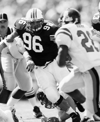

Jimmy BrumbaughDefensive Tackle
As the sun sets on the Auburn practice fields most of the football players can hardly wait to get home and relax and possibly watch TV or play a little PlayStation. Jimmy Brumbaugh, on the other hand, is thinking about getting home so he can finally spend some time with his family, one-year-old son Legend before he tucks him into bed, as well as visit with his wife Kelly and their other son, seven-year-old Nash. Unlike the rest of the football team, Brumbaugh not only has to deal with the daily struggles of school and practice, but he also is trying to raise a family at the same time. Brumbaugh isn't complaining though. He wouldn't change anything about the way things have turned out. "Things happen for a reason," Brumbaugh said. "The things that happen in your life make you who you are. I am the person that I am." Brumbaugh fills many different roles every day, both on and off the field. As a father, he partakes in all the activities of raising two small children. "Jimmy changes lots of diapers," Kelly Brumbaugh said. "He has gotten really good at it." Growing up, Brumbaugh was the oldest of seven children with five younger brothers and one younger sister. He learned to take care of his younger siblings and is now making the transition to using those skills with his own children. On the field, Brumbaugh has proven himself to be a leader after dealing with plaguing knee injuries and having to sit out what he thought would be his senior year last season. After a season ending knee injury in the first play of the Georgia game in 1997, Brumbaugh had to sit and watch as Auburn played for the first time in the SEC Championship game. "If I could have played, things might have turned out differently," Brumbaugh said. "You never know if I could have made a difference in one play that would have changed the outcome of the game." During all of Brumbaugh's disappointment of being injured, there was a spark of hope when he found out that his wife was pregnant shortly after his injury at the Georgia game. Knowing that he was going to have a child kept him going throughout his rehabilitation. Brumbaugh would spend the next several months preparing for his child's birth while also trying to rehabilitate his knee. He and his wife even induced labor by a week to insure that the baby would be born before the start of two-a-days. On August 2, 1998, James Legend Brumbaugh entered into Jimmy's life. "The first thing I did was check to see if the baby was a boy," Brumbaugh said. "We knew the sex of the baby beforehand, but I just had to make for sure with my own eyes." A few days later, Brumbaugh practiced with the rest of the team, looking forward to his last year as an Auburn Tiger. Yet, things didn't turn out as planned and Brumbaugh eventually had to accept that he wasn't ready to play. He was granted a medical redshirt for the season. "I know it was the best thing for me to redshirt and give myself time to come back from my surgery," Brumbaugh said. "It was still very hard though, not being able to help the team out. I still went to practices and games, but I just couldn't play." But this year he is finally getting to play his senior year for the Tigers. He credits his ability to hustle for the reason for much of his success. That hustle has come in handy when he is trying to keep up with a one-year-old that has just begun to crawl and walk. As a youngster, Brumbaugh didn't get in trouble and was a quiet child. His family, mainly his grandparents, guided him towards football. He dabbled with the idea of football in the second grade, but then concentrated on basketball for the next few years. But in the seventh grade, he was drawn back to football when his family moved to Keystone Heights, Florida. He wasn't highly recruited in high school and didn't even attend an Auburn football game as a recruit. All he knew was that he wanted to stay in the South and considered himself a Florida Gator fan until he came to Auburn.  By the end of his senior year of football at Keystone Heights High School, Auburn finally started showing interest in Brumbaugh. Brumbaugh said he became interested in Auburn because of the tradition it had, along with the idea that he may have a chance to play his sophomore year unlike other places where he might not have a chance until he was a junior. So he packed up his bags and came to Auburn. Brumbaugh said he could see himself spending his life on the Plains. "I will be an Auburn Tiger until I die," Brumbaugh said. "Auburn is such a great place. It's a family town with nice people who support you and stand behind you no matter what happens." As for what happens in Brumbaugh's future, only time will tell. The 6-foot-1, defensive tackle will graduate in the spring with a degree in Health and Human Performance. He also wants the opportunity to continue his football career in the NFL. That's all he asks for is an opportunity. Opportunities are what has made Brumbaugh the person he is today. He has had many opportunities to do what he wanted and he has no regrets. He hopes that in the future he can help others and hopes football can somehow aid him with this goal. Brumbaugh even sees himself possibly coaching one day. Brumbaugh's other future goals away from football are to add two more children to his family, a girl and a boy if possible. He also wants to open up his own business as well as a business for his wife. As for his present term goals, Brumbaugh just wants to spend time with his family, even if he only has a chance to rest his son's head on his cheek. Whenever he has more than a moment of free time, Brumbaugh likes to head outdoors with his family, such as going to the circus or the park. They try to go somewhere every Saturday when it's not football season. With two sons though, Brumbaugh may be looking at a lot of Saturdays filled with football from a different point of view. "They can play if they want to play," Brumbaugh said. "But once they start, they gotta go through with it. I knew I couldn't quit last year when things were rough. I kept my head up no matter what happened. I hope my children will feel the same about the things that they put their heart into." Brumbaugh has put his heart in a lot of things and has plenty to show for it. Of course, he couldn't have done everything by himself. "My wife Kelly takes care of me," Brumbaugh said. "She takes care of everything I need, so I have the opportunity to play football. We are always together and our family is our number one priority." Although most players hate getting up in the morning to go to class and getting home late after a hard football practice, Brumbaugh knows he is going home to his family who has helped make him who he is, a devoted husband, a proud father, and an Auburn Tiger.
If you could be any superhero, who would you be?
If you could trade places for a day with someone, who would it be?
If you could be anything in the world, what would you want to be?
Who are your role models?
If you won a million dollars, what would you do?
© 1999 Auburn Network, Inc. |